有个问题: 你真的了解jquery中的ready事件和原生js中的onload事件的区别么?
先来看一下官方的说法吧~~~
摘自《锋利的jquery(第二版)》第四章4.1.1 -- 加载DOM
其中有一段文字表述:
$(document).ready()方法和window.onload方法有相似的功能,但是在执行时机方面是有区别的.
window.onload方法是在网页中所有元素(包括元素的所有关联文件)完全加载到浏览器后才执行.
即javascript此时才可以访问网页中的任何元素.
而通过jquery中的$(document).ready()方法注册的事件处理程序,在dom完全就绪时就可以被调用.
此时,网页的所有元素对jquery而言都是可以访问的.
但是,这并不意味着这些元素关联的文件都已经下载完毕.
之后举了个例子 --- 多图页面jq的ready事件比js的load事件要先执行
然后...
我就实验了一下...
两个页面,同时都在各自的页面加载两张图片(为了模拟大加载量,整了一个错误链接模拟加载超时...)
然后,两页面分别使用jq的ready和js的onload方法(鉴于单一变量的实验原则,两个页面都引用的jquery,这里我使用的是最新的3.3.1版本)
结果: ready确实优先执行与load
控制台显示信息:
ready的console打印信息先于图片加载异常提示显示
而onload事件 -- 图片加载异常提示先于load的console打印信息显示
废话不多说,上图
先是onload事件 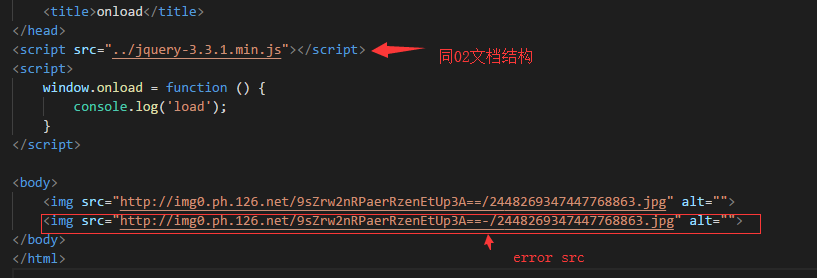 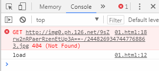
然后是ready事件 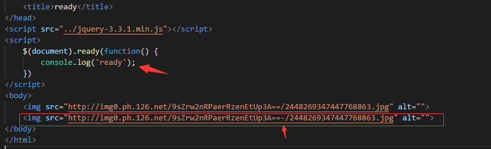 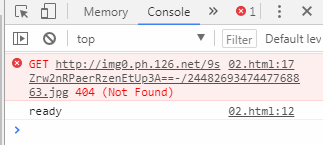
有此可见书山说的并没有错
在多图环境下,ready确实比onload要优先执行,也就是说ready只需dom就绪,而load需要页面所有资源,包括外链资源的全部加载完毕
ok~~~本篇完结~~~撒花
如果仅仅是这样~那我还写这个干嘛...
so...外链又不只是img...如果是script呢?如果script加载外部js中有阻断方法(alert/大运算量函数)呢?
那就试试呗
实验一:
页面引入script标签,并且src加载的是一个错误的文件(其实想要模拟请求超时或是大文件脚本文件);
如下图
还是onload方法先来一波 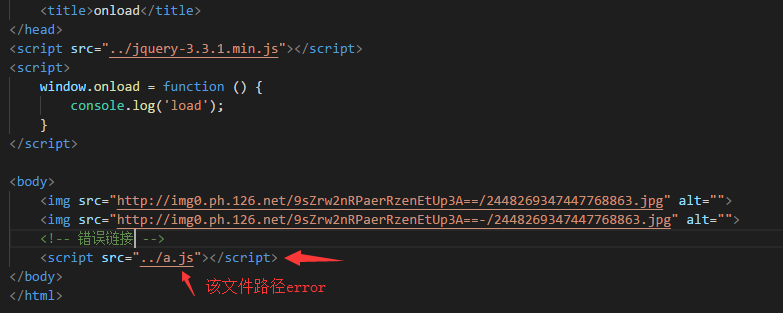 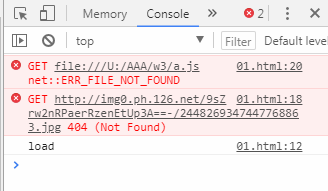
然后ready方法来一波 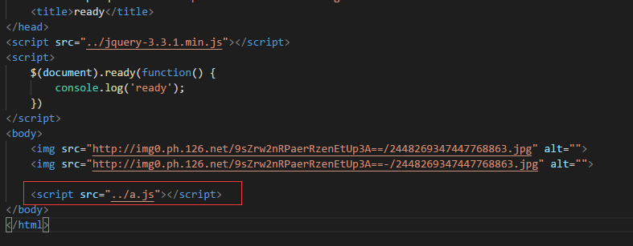 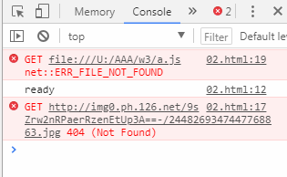
可以看出,脚本文件加载异常的信息全部都优先显示
也就是说不论是jq的ready事件还是js的onload事件,
都是在外部脚本文件加载执行之后执行的...这么说onload可以说的过去,毕竟是需要在页面全部资源加载完毕后才执行
可是,为什么jq的ready也是呢?由图可看出,ready事件依然是优先于img的外链的加载的,但是同属dom的script的外链脚本却是优先加载执行
Question: 无论是jq的ready还是js的onload都是在页面全部js执行完毕之后执行的?
实验二:
页面引入正确的外链脚本文件,但是外链脚本文件中含有阻塞性代码(大量循环或是alert打断),循环实验5000次
如下图
还是onload方法先来一波 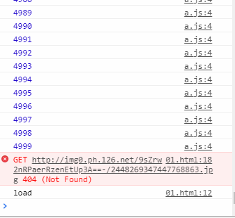
然后ready方法来一波 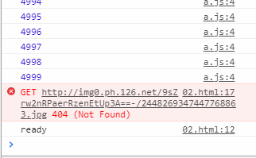
实际结果显示
onload不负众望,稳成一匹野马,没啥好说的~依旧是load最后打印信息
但是jq的ready方法却将"ready"在最后打印,滞后于img404的信息显示,这是为什么?
在之前ready一直是优先于图片加载之前的执行的
同样的实验代码,只是将a.js中的循环代码修改为alert阻断方式
同样,ready和load都是在外链脚本文件关闭alert才打印信息,由此显示出一个问题,就是实验一抛出的question
不论是jq的ready方法还是js的onload方法,应该都是在外链脚本执行之后才会执行的
但是依旧解释不了上图中,jq的ready方法滞后于img404信息打印,因为ready方法是优先执行与img图片加载的啊~~~
在alert实验中,发现一个问题,就是当页面弹出alert弹框时,浏览器控制台中显示network会处于pedding状态
也就是说,阻塞脚本代码不仅会延迟onload和ready执行,同样的会延迟页面资源加载渲染,注意,只是渲染延迟,因为浏览器加载外部资源是多线程的
Question: 同样是外链脚本异常(404/阻塞),为何实验一ready方法优先于img404信息打印,而实验二滞后于404信息打印呢?
实验三:
页面引入错误脚本文件,有较大延迟(从网上随便找了一个网站的脚本文件,将链接加几个字符使其错误)
如下图
onload没截图~没新意~load信息一直都是最后打印
但是这次实验,ready却有两种不同的打印
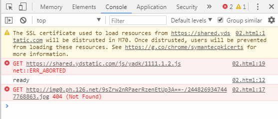
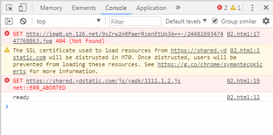
一次优先于img404信息打印,一次滞后于img404信息打印~
得咧~这次吧之前的两种情况都整出来了~懵逼ing~~~
然鹅~这次却在network中找到了一个不同寻常的参数信息---Time
下图是ready信息先于img404信息时,network信息
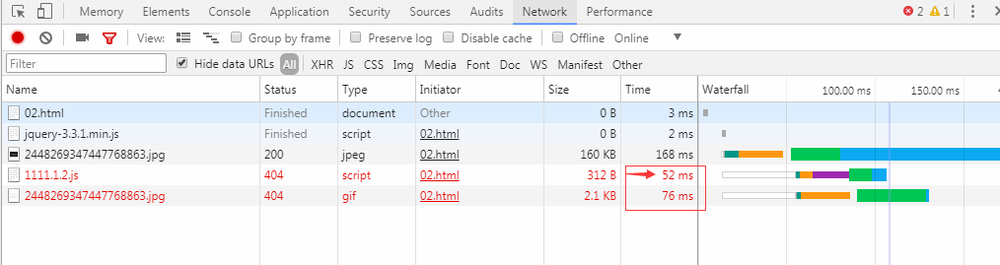
下图是ready信息滞后img404信息时,network信息
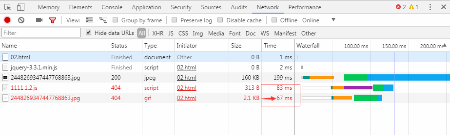
soga~~~
命题一~jq的ready和js的onload事件执行滞后于外链脚本的执行
命题二~jq的ready方法执行是在dom加载完毕时,优先于页面资源加载(图片等)
以上两个命题,现在看起来都是正确的
但是对于jquery的ready方法来说,当外链脚本的加载时间(或者是执行时间/超时时间)小于其他页面资源加载时,会优先执行ready事件
当外链脚本的加载时间(或者是执行时间/超时时间)大于其他页面资源加载时,ready方法的执行会在外链脚本加载完毕之后执行(此时页面其他资源已经加载完毕),
所以就出现了ready方法滞后于图片资源加载情况~~~
总的来说:
onload方法就像是单线程的,一定会等到所有资源加载完毕(不管是阻塞还是超时),总是会在最后执行;(html->js->css->img等其他非文字资源->onload)
而jquery的ready方法,如同多线程(如同如同如同),当页面dom加载完毕后,启动脚本加载,并将ready方法置于脚本最后,同时浏览器并行加载其他资源
(html->js->css->ready(同时图片等其他非文字资源加载));
其实两者在执行时间方面,区别在于onload需要等外链资源加载,ready不等~
本篇文章其实就是试试脚本文件在书中所说"在dom完全就绪时",这一节点之前还是之后~~~这么看起来~应该算在里面了~
Question: 最后一问~何为DOM完全就绪(DOMContentLoaded,涉及到页面渲染,dom树,样式表,渲染树...阿西吧...母鸡啊~~~);